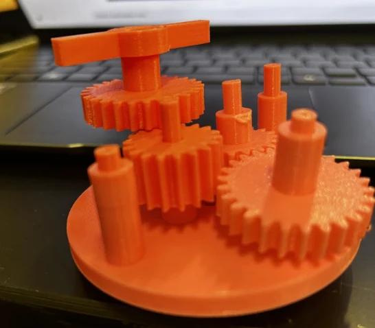
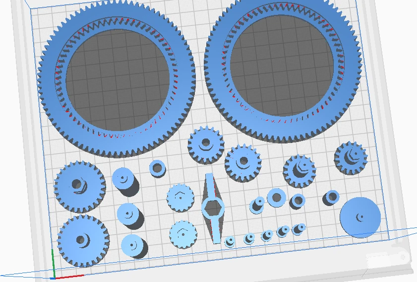
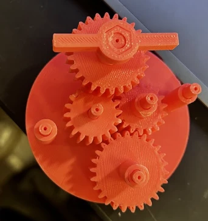
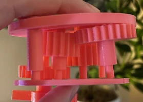
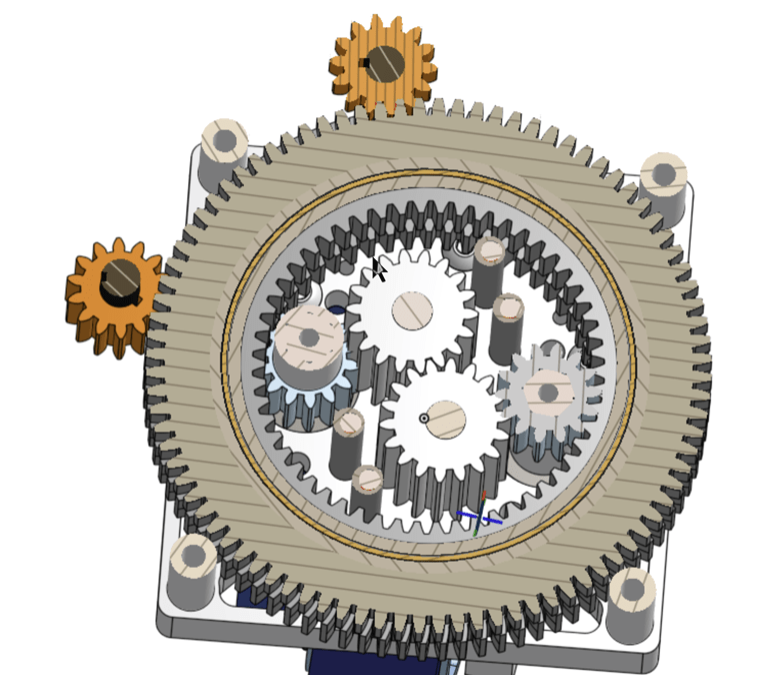
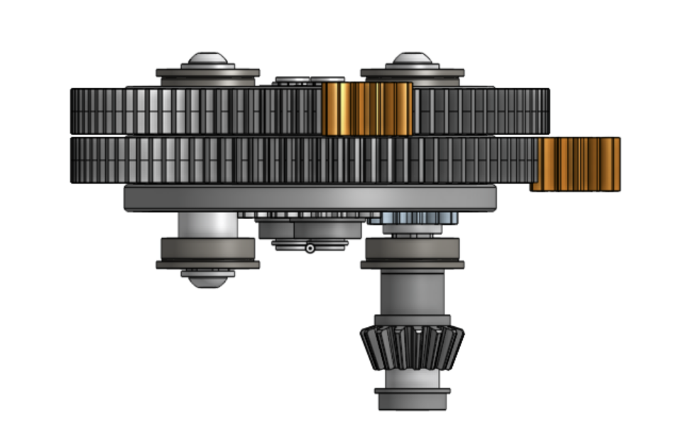
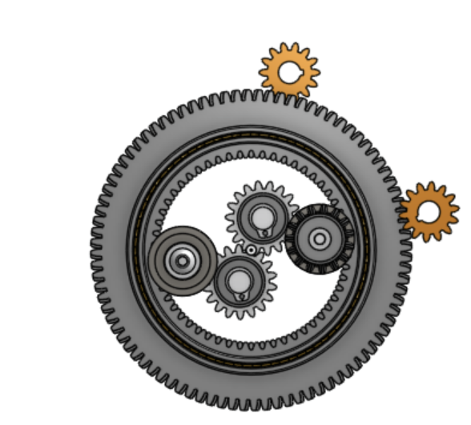
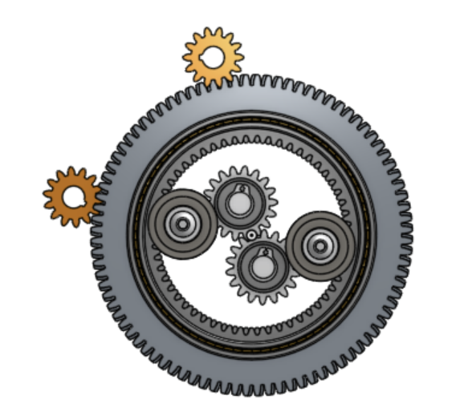

VEX U Robotics
Swerve-drive prototype
For our VEX U competition robot, we’re developing a swerve drive to cut the time it takes to move between points on the field. If the robot finishes one task facing forward and its next target is off to the side, turning the entire chassis takes time. Swerve lets us point the wheels toward that target while keeping the chassis facing the same direction.

What the first prototype revealed
I printed the gear assembly to check whether the wheel could be driven and steered smoothly in the space available. Once assembled, the gears were misaligned and could not turn smoothly through a full rotation. The CAD side view helps explain why alignment matters here. Each gear must sit at the right height to meet its neighbor, and their shafts must hold the right distance apart. I’m working on version 2 with smooth engagement as the first thing to check.
Project gallery
Scroll through the images or use the controls.






